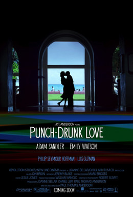

Paul Thomas Anderson
2002
95 minutes
TITLE: Punch Drunk Love TEXT PLACEHOLDER 208
This is a Paul Thomas Anderson movie. This is an Adam Sandler movie. You're only going to remember one of these facts going into it, and you're going to brace yourself accordingly. Adam Sandler is going to play the role he was born to play, Adam Sandler. Except you anticipate this is going to be some manner of sad-clown Adam Sandler, where he's still loud and impulsive and goofy and just like Adam Sandler in every Adam Sandler movie. But the music will be sad. He'll throw his golf clubs into the water hazard while a Nick Drake song plays in the background and he sits down in the sand trap watching the sun set. This will be the film you've missed over all these years while your friends all around you would nod solemnly and intone, "Wow, Adam Sandler really has some acting chops, and you know it's just as hard if not harder to play funny as it is to play sad."
Somewhere out there is someone who still thinks Boogie Nights is a history about the early years of the Disco scene. Somehwere out there is someone who thinks The Master is about Joaquin Phoenix as a rowdy sailor and Philip Seymour Hoffman is his beleaguered CPO. Somewhere out there is someone who thinks There Will Be Blood is a romantic comedy about Daniel Day Lewis failing in the oil business and opening up a malt shop.
You yourself didn't want to see Inherent Vice until you figured out it was Paul Thomas Anderson directing a Thomas Pynchon film and it occurred to you that, yes indeed, that...could work.
You're going to start this movie. You're almost going to give up on it when he starts some harebrained scheme involving yogurt cups and then a Quirky musical instrument falls off a truck and he's apparently going to wear that goddamned suit for the entire film and he has some uncountable number of sisters. Then after about half an hour you'll realize that it's not so bad.
Sometimes giving it a chance means starting to give something a chance and continuing giving it a chance even when that chance starts testing your patience a bit. This is worth it. Is it a great film? It won't be one of your favorites, but it will ultimately be...alright. It will go in the category of "I thought I would hate this but...didn't." Unlike some films, this is absolutely worth wasting a little bit of your time on.
Time to choose something different: